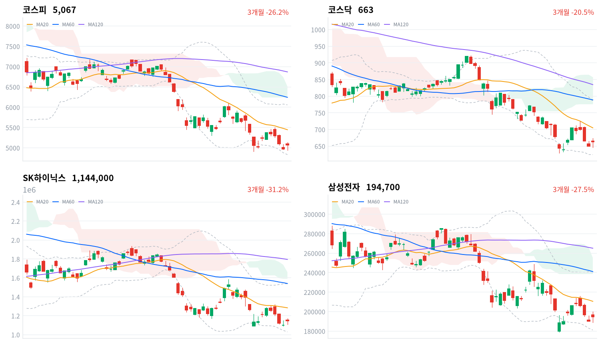

엔비디아 3분기 매출이 전망을 넘자 코스피는 5,067.44로 올라 전날 내준 5,000선을 되찾았고, 코스닥도 1.96% 오른 662.81로 마감했다. 다만 장중에는 상승분을 모두 내주고 전일 종가 아래 4,943.17까지 밀렸다가 오후에 회복했다.
외국인은 코스피를 3,366억원 순매도해(당일 잠정) 매도 규모를 크게 줄였지만 방향은 바꾸지 않았다. 실적 하나로 AI 하드웨어 매도가 끝났다고 보기는 이르고, 11월 19일 앤트로픽 공모가 확정 뒤 외국인이 순매수로 돌아서는지를 기다린다.
엔비디아가 11월 17일(현지) 장 마감 뒤 내놓은 3분기(8~10월) 매출은 1,158억달러로 LSEG 집계 전망 1,091억달러를 넘었고, 4분기 매출 가이던스는 약 1,300억달러였다. 한국 장에서는 SK하이닉스(+4.19%)와 삼성전자(+2.31%)가 지수를 끌어올렸다. 그러나 외국인은 코스피를 3,366억원 순매도해(당일 잠정) 4거래일 연속 팔았고, 기관이 4,967억원을 순매수했다.
장 마감 뒤 보도는 엔비디아 호실적이 반도체 대형주를 끌어올렸고, 앤트로픽 상장을 앞둔 경계감과 높은 미국 국채금리가 상승 폭을 제한했다고 설명했다. 장 전에 나온 증권사 견해도 같은 방향이었다. 키움증권 한지영 연구원은 엔비디아의 4분기 매출 가이던스와 2028회계연도 매출 전망 상향을 근거로 엔비디아발 리스크가 완화됐다고 봤고, 국내 증시는 매수 주체가 사라지고 이익 신뢰도가 흔들리는 국면이라고 진단했다. 엔비디아 실적이 AI 수요 걱정을 덜었다는 설명에는 동의한다. 하지만 이 설명은 외국인이 돌아왔는지를 확인하지 못한다. 실적이 나온 뒤 첫 정규장에서도 외국인은 팔았고, 한국 장 동안 나스닥100 선물은 0.71% 내려 미국 기술주 선물도 실적을 따라 오르지 않았다. 어제 하락의 근거로 든 메모리 이익 정점 우려에는 엔비디아 실적이 직접 답하지 않는다. 시장이 엔비디아 실적 뒤 한국 반도체에 무엇을 기대하는지 잴 옵션·선물 가격은 없다.
그래서 이날 반등은 AI 하드웨어 매도가 끝난 결과라기보다, 실적이라는 큰 일정을 넘기면서 외국인 매도 압력이 줄어든 결과로 본다. 외국인 순매도는 전날 1조4,190억원에서 3,366억원으로 줄었지만 방향은 그대로였고, 지수는 장중 시가 갭을 모두 내준 뒤 오후에야 회복했다. 그 오후 반등을 누가 만들었는지는 장중 투자자별 자료가 없어 가리지 못한다. AI 투자 의구심도 남아 있다. BofA의 11월 펀드매니저 설문에서 응답자의 52%가 6개월 안에 주요 AI 하이퍼스케일러 한 곳이 자본적지출 감축을 발표할 것으로 내다봤고(10월 30%), 투자자들이 AI 인프라 투자의 지속 가능성을 점점 더 우려한다는 시각도 나왔다. 다른 설명은 엔비디아 실적으로 위험 축소가 끝났고, 남은 외국인 매도는 앤트로픽 대형 공모를 앞둔 일시적 자금 이동이라 공모가 지나면 순매수로 돌아선다는 것이다. 두 설명은 11월 19일 외국인 코스피 순매수 방향과, 11월 20일 코스피 종가가 5,253.52를 넘는지 4,947.48 아래로 내려가는지로 구분한다.
새로 제안할 상품은 없다. 반도체 업종은 엔비디아 실적으로 수요 쪽 근거를 얻었지만, 외국인 매도가 이어지는 동안에는 하루 반등만으로 추세가 바뀌었다고 보기 이르다. AI 부품 안에서는 엔비디아 협력 확대 보도가 붙은 삼성전기가 7.43% 오르고 목표가가 내려간 이수페타시스는 4.65% 내렸다. 시장이 AI 부품을 한 묶음으로 사지 않고 고객이 확인된 종목을 고르기 시작했다고 보지만, 협력은 아직 검토 단계 보도여서 계약 공시와 이익 추정 상향이 나와야 이 판단을 뒷받침한다. 가장 가까운 결정적 일정은 11월 19일이다. 앤트로픽 공모가가 확정된 뒤 그날 정규장에서 외국인이 코스피 순매수로 돌아서는지를 기다린다.
코스피가 11월 18일 기준 일목 전환선 5,208 위에서 마감하면 반등을 매도 압력 둔화로만 보는 판단을 철회하고, 실적 통과로 위험 축소가 끝났다는 설명을 우선 설명으로 본다.
출처: 이투데이, 한국경제TV, Investing.com, 서울경제TV, 재경일보, 톱스타뉴스
11월 17일 미국 정규장은 엔비디아 실적 발표 전에 끝났고, S&P 500은 1.03%, 나스닥은 0.74%, 다우는 1.64% 내렸다. 아시아는 엇갈렸다. 닛케이(+0.28%)·대만가권(+0.26%)·상해종합(+0.09%)은 소폭 올랐고 항셍은 0.91% 내려 네 지수 평균은 -0.07%였다. 코스피는 이 평균보다 2.06%포인트 강해, 같은 실적에 아시아에서 가장 크게 반응했다.
코스피는 전일 종가 4,968.48보다 크게 높은 5,098.82에서 출발해 간밤 엔비디아 실적을 시가에 먼저 반영했다. 그 뒤 한국 정규장 동안 미국 선물은 오히려 내렸다. S&P 500 선물은 0.40%, 나스닥100 선물은 0.71% 하락했다.
코스피는 장 초반 5,133.14까지 오른 뒤 밀려 한때 전일 종가보다 낮은 4,943.17까지 내려갔고, 오후에 회복해 하루 범위의 중간보다 위에서 마감했다. 코스닥도 674.30까지 올랐다가 전일 종가 아래 646.31까지 밀린 뒤 662.81로 끝나 같은 모양을 그렸다.
반도체가 지수를 끌어올리고 외국인이 팔고 기관이 산 날이다. 장 초반 외국인 매도 전환이 지수를 밀어냈고 오후 기관 매수가 반등을 만들었다는 보도가 나왔지만, 장중 투자자별 흐름과 시간외 거래 자료가 없어 이 순서를 확인하지는 못한다. 업종으로는 AI 부품과 로봇·엔터가 강했고 제약·건설·은행은 반등장에서 내렸다.
출처: 이투데이, 서울경제TV, 아이뉴스24
코스피는 1.99% 오른 5,067.44, 코스닥은 1.96% 오른 662.81로 마감했다. 코스피는 전날 내준 5,000선을 하루 만에 되찾았지만 20일선(5,446)보다는 여전히 6.94% 낮다.
| 지수 | 종가 | 등락률 | 시가 | 고가 | 저가 | 전일 종가 |
|---|---|---|---|---|---|---|
| 코스피 | 5,067.44 | +1.99% | 5,098.82 | 5,133.14 | 4,943.17 | 4,968.48 |
| 코스닥 | 662.81 | +1.96% | 664.93 | 674.30 | 646.31 | 650.06 |
해석을 바꾸는 변곡점은 오전 10시 이후였다. 코스피는 10시 5,109에서 11시 4,980으로 밀려 시가 갭을 모두 내줬고, 정오까지 전일 종가 부근에 머물다 13시 30분에야 5,069로 올라섰다. 종가는 시가보다 낮다. 실적 갭이 그대로 지켜진 상승이 아니라 한 번 지워진 뒤 다시 만든 상승이어서, 장 초반 매수는 오래 버티지 못했다.
| 주체 | 순매수(억원) |
|---|---|
| 개인 | -6,232 |
| 외국인 | -3,366 |
| 기관 | +4,967 |
| 주체 | 순매수(억원) |
|---|---|
| 개인 | -1,213 |
| 외국인 | -494 |
| 기관 | +1,791 |
외국인 매도는 줄었지만 멈추지 않았다. 외국인은 코스피를 3,366억원 순매도해(전일 1조4,190억원 순매도, 당일 잠정) 11월 13일부터 4거래일 연속 팔았다. 엔비디아 실적이 나온 뒤에도 방향은 바뀌지 않았고, 지수가 2% 가까이 오른 날 외국인이 판 것은 반등이 외국인 매수로 만들어지지 않았다는 뜻이다.
받는 쪽은 기관이었다. 기관은 4,967억원을 순매수해(전일 5,134억원 순매수) 이틀째 샀고, 개인은 6,232억원 순매도로 돌아섰다(전일 4,310억원 순매수). 장 마감 뒤 보도는 기관과 기타법인을 합친 순매수를 9,700억원 규모로 집계했다. 기관 안에서 어느 계정이 샀는지는 세부 주체 자료가 없어 알 수 없다.
코스닥에서는 외국인이 494억원을 순매도해(전일 882억원 순매도) 최근 10거래일 내내 팔았다. 기관은 1,791억원 순매수로 돌아섰고(전일 265억원 순매도), 개인은 1,213억원을 순매도했다(전일 1,081억원 순매수).
장중 누적 수급과 프로그램 매매는 받을 수 있는 자료가 없어 싣지 않는다.
출처: 아이뉴스24
| 순위 | 종목/ETF | 구분 | 거래대금 | 비고 |
|---|---|---|---|---|
| 1 | SK하이닉스 | 개별주 | 3.97조원 | - |
| 2 | 삼성전자 | 개별주 | 3.38조원 | - |
| 3 | 반도체 테마 ETF | 테마·롱 | 1.55조원 | 27종 합산 |
| 4 | 삼성전기 | 개별주 | 0.82조원 | - |
| 5 | 삼성전자우 | 개별주 | 0.68조원 | - |
| 6 | KODEX CD금리액티브(합성) | 단기금리·현금성 | 0.52조원 | - |
| 7 | SK스퀘어 | 개별주 | 0.39조원 | - |
| 8 | 삼성E&A | 개별주 | 0.28조원 | - |
| 9 | 삼성SDI | 개별주 | 0.24조원 | - |
| 10 | SK하이닉스 레버리지 | 단일종목 레버리지·롱 | 0.23조원 | 5종 합산 |
단위 백만원 원본을 조 단위로 환산했다. 같은 기초자산 ETF는 방향별로, 같은 테마 섹터 ETF는 테마별로 묶고 지수·해외 ETF는 제외했다.
거래는 메모리 대형주에 몰렸고, 이번에는 주가도 함께 올랐다. SK하이닉스(3.97조원)와 삼성전자(3.38조원)가 1·2위였고 반도체 테마 ETF 27종 합산(1.55조원)이 3위였다. 오를 때 두 배로 움직이는 SK하이닉스 단일종목 레버리지 ETF 5종 합산에도 0.23조원이 거래돼 10위에 들었지만, 투자자별 자료가 없어 누가 어느 방향으로 거래했는지는 알 수 없다. 엔비디아 협력 보도가 나온 삼성전기는 0.82조원으로 4위였다.
반등은 넓었지만 고르지는 않았다. 대표 ETF 기준 12개 섹터 가운데 9개가 올랐고 로봇(+6.21%)·반도체(+2.46%)·증권(+2.33%)이 앞섰으며, 헬스케어(-2.38%)·건설(-0.97%)·은행(-0.91%)은 내렸다. 업종 분류로 보면 반도체와반도체장비 업종이 3.99% 오르며 175개 종목 가운데 129개가 올라(74%) 폭넓은 상승이었다.
가장 크게 오른 두 업종은 좁은 상승이었다. 방송과엔터테인먼트(+15.72%)는 58개 가운데 34개, 전자장비와기기(+6.36%)는 105개 가운데 64개만 올라 일부 종목이 평균을 끌어올렸다. 기계(+4.60%, 107개 중 74개 상승)와 게임엔터테인먼트(+4.59%, 34개 중 27개 상승)는 넓게 올랐다.
하루 반등은 1주일 낙폭의 일부만 되돌렸다. 반도체 섹터는 1주일 -10.34%, 1개월 -18.85%이고, 1주일 수익률이 플러스인 섹터는 은행(+2.34%)과 증권(+0.71%)뿐이다. 지난주 하락장을 받친 은행이 반등일에 내린 것은 방어 매수가 일부 풀린 모습과 부합한다.
반도체 대형주가 지수를 가장 많이 끌어올렸다(SK하이닉스 +4.19%, 삼성전자 +2.31%). 엔비디아의 3분기 실적과 4분기 가이던스가 전망을 넘자 메모리 대형주가 강하게 올랐다는 보도가 나왔다. 삼성전자우(+3.95%)는 보통주보다 더 올랐고, SK하이닉스 지분을 가진 SK스퀘어도 4.42% 올랐다.
제약 대형주는 반등장에서 내렸다(삼성바이오로직스 -3.39%, 셀트리온 -2.58%). 바이오 대형주가 약했다는 보도는 있지만 확인된 재료는 없다. 삼성바이오로직스는 폴리펩타이드 인수 자금을 위한 2조6,650억원 규모 유상증자를 진행 중이고(확정발행가 117만4천원), 이 증자와 이날 하락을 잇는 보도는 확인하지 못했다.
AI 부품에서는 삼성전기가 7.43% 올랐고 LG이노텍도 5.60% 올랐다. 엔비디아가 삼성전기 세종·부산 사업장의 생산 인프라 확충에 추가 자금 지원을 검토하고, 협력을 기판에서 MLCC로 넓히기로 했다는 보도가 나왔다. 시장 일각에서는 엔비디아 수요가 앞으로 삼성전기 생산 구조에서 큰 비중을 차지할 것이라는 시각도 있었다. 반대 압력도 컸다. 삼성전기 공매도 거래대금은 848억원으로 전일보다 123.4% 늘어 코스피 1위였고, 외국인·기관 매도에 상승 폭이 줄었다는 보도가 나왔다. LG이노텍은 같은 업종과 함께 올랐을 뿐 개별 재료는 확인되지 않았다. 같은 AI 부품인 이수페타시스는 하나증권이 3분기 영업이익 63% 증가에도 동종업체 주가 하락을 반영해 목표가를 15만원으로 낮춘 날 4.65% 내렸다.
삼성E&A는 지수 강세와 반대로 5.60% 내렸다. 3분기 호실적 뒤 수주 실행력을 점검하는 시각은 보도됐지만, 이날 하락의 원인을 특정한 기사는 없어 확인된 재료는 없다.
두산은 8.69% 올랐다. 엔비디아 실적 소식에 강세를 보였다는 보도가 나왔지만, 두산의 어느 사업이 실적 소식과 이어졌는지는 기사에서 확인하지 못했다. 같은 지주회사인 SK도 5.26% 올랐다.
묶음 밖에서는 로봇과 엔터가 강했다. 코스닥의 레인보우로보틱스가 20.06%, 로보티즈가 13.24% 올랐다는 보도가 나왔고, 배경으로 내년 1월 CES 2027에서 삼성전자·LG전자가 휴머노이드 로봇을 공개할 것이라는 기대가 거론됐다. 엔터에서는 하이브가 7.62% 올랐지만, 한중 FTA 후속협상 타결 소식은 장 마감 뒤 보도돼 이날 강세와 잇지 않는다.
출처: 서울경제TV, 디지털타임스, 한국경제, 뉴스토마토, 이투데이, 재경일보, 톱스타뉴스, CBC뉴스, 잡포스트, 글로벌이코노믹
국고채 금리는 주식 반등과 함께 소폭 올랐다. 3년물은 1.1bp 오른 3.736%, 10년물은 0.9bp 오른 3.975%로 마감했다.
| 지표 | 금리 | 전일比(bp) | 기준일 |
|---|---|---|---|
| 국고채 3년 | 3.736% | +1.1 | 2026-11-18 |
| 국고채 10년 | 3.975% | +0.9 | 2026-11-18 |
| CD 91일 | 3.37% | -1.0 | 2026-11-18 |
| 회사채 AA- 3년 | 4.409% | +0.7 | 2026-11-18 |
| 한국은행 기준금리 | 3.00% | 0.0 | 2026년 10월 기준 |
커브는 거의 움직이지 않았다. 10년물과 3년물의 금리차는 23.9bp로 0.2bp 좁혀졌고, 최근 2년(533거래일) 가운데 좁은 쪽 22% 안에 있어 장기 성장 기대가 살아났다고 읽기는 어렵다. 회사채 AA- 3년물은 0.7bp 올라 국고채보다 덜 올랐고, 국고채 3년물과 비교한 금리차는 67.3bp로 0.4bp 좁혀졌다. 그래도 최근 2년(533거래일) 가운데 넓은 쪽 18% 안이라, 주식 반등이 회사채 시장의 위험 가격을 끌어내리는 데까지 이어지지는 않았다.
3년물과 기준금리의 차는 73.6bp로 최근 2년(533거래일)의 한가운데쯤이다. 이 차에는 정책 경로와 기간프리미엄이 섞여 있어 11월 26일 금통위를 앞둔 시장 기대를 그대로 보여 주지는 않는다.
국고채 10년 3.975%, 3년 3.736%(11월 18일): (3.975 − 3.736) × 100 = 23.9bp, 변화 −0.2bp(= +0.9bp − (+1.1bp)). 회사채 AA- 3년 4.409%: (4.409 − 3.736) × 100 = 67.3bp, 변화 −0.4bp(= +0.7bp − (+1.1bp)).
| 미국 참조 지수 | 구분 | 관측 | 등락률 | 업종 내 상승 비율 | 기준일 |
|---|---|---|---|---|---|
| 반도체·AI 하드웨어 | 업종 | 반도체와반도체장비 | +3.99% | 74% | 11/18 |
| 반도체·AI 하드웨어 | 종목 | SK하이닉스 | +4.19% | – | 11/18 |
| 반도체·AI 하드웨어 | 종목 | 삼성전자 | +2.31% | – | 11/18 |
| 반도체·AI 하드웨어 | 지수 | 대만가권 | +0.26% | – | 11/18 |
| 전력망 | 업종 | 전기장비 | +2.15% | 77% | 11/18 |
| 전력망 | 업종 | 전기제품 | +0.60% | 59% | 11/18 |
| 전력망 | 종목 | HD현대일렉트릭 | +1.06% | – | 11/18 |
| 전력망 | 종목 | LS ELECTRIC | +2.11% | – | 11/18 |
| 전력망 | 종목 | 효성중공업 | +2.07% | – | 11/18 |
| 방산 | 업종 | 우주항공과국방 | +1.46% | 83% | 11/18 |
| 방산 | 종목 | 한화에어로스페이스 | +1.44% | – | 11/18 |
| 방산 | 종목 | LIG디펜스앤에어로스페이스 | +1.74% | – | 11/18 |
| 산업재 | 업종 | 기계 | +4.60% | 69% | 11/18 |
| 산업재 | 종목 | HD현대중공업 | -0.39% | – | 11/18 |
| 산업재 | 종목 | 한화오션 | -0.33% | – | 11/18 |
| 산업재 | 종목 | 삼성중공업 | -1.50% | – | 11/18 |
| 금속·광업 | 업종 | 철강 | +1.48% | 58% | 11/18 |
| 금속·광업 | 종목 | POSCO홀딩스 | 0.00% | – | 11/18 |
| 금융 | 업종 | 증권 | +1.86% | 77% | 11/18 |
| 금융 | 종목 | KB금융 | -0.26% | – | 11/18 |
| 금융 | 종목 | 신한지주 | -0.57% | – | 11/18 |
| 소프트웨어 | 업종 | 소프트웨어 | +2.44% | 64% | 11/18 |
| 소프트웨어 | 업종 | IT서비스 | +2.98% | 71% | 11/18 |
| 소프트웨어 | 종목 | NAVER | +0.18% | – | 11/18 |
| 소프트웨어 | 종목 | 카카오 | +0.32% | – | 11/18 |
| 에너지 | 업종 | 석유와가스 | +3.17% | 68% | 11/18 |
| 일본 | 지수 | 닛케이 | +0.28% | – | 11/18 |
| 중국 | 지수 | 항셍 | -0.91% | – | 11/18 |
| 중국 | 지수 | 상해종합 | +0.09% | – | 11/18 |
원/달러는 한국장 시간대 1,327.49원(11:30)에서 1,336.30원(12:30) 사이에 머물다 1,332.78원(15:30)에서 끝났다. 외국인이 4거래일째 주식을 팔았는데도 원화가 크게 약해지지 않아, 해외주식 펀드의 대기 자금이 달러를 사는 비용은 이날도 오르지 않았다. 대기 자금의 단기 참고 금리인 CD 91일은 3.370%로 1.0bp 내렸다.
반도체는 같은 엔비디아 실적에 한국이 대만보다 훨씬 크게 반응했다. 한국 반도체와반도체장비 업종이 3.99% 오르는 동안 대만가권은 0.26% 오르는 데 그쳤고, 한국 장 동안 미국 기술주 선물은 내렸다. 한국만의 큰 반등은 앞선 한국 반도체 매도를 되돌린 몫일 수 있어, 미국 반도체 테마의 가격 흐름을 판단할 근거로는 약하다. 전력망은 전기장비 업종이 2.15% 올랐지만 HD현대일렉트릭(+1.06%)·효성중공업(+2.07%)·LS ELECTRIC(+2.11%)의 반등이 반도체 대형주보다 작아, 엔비디아 실적이 전력 설비 수요 기대까지 끌어올리지는 못했다. 11월 18일 미국 정규장에서 전력 설비주가 반도체와 함께 오르는지가 이 차이가 아시아만의 것인지를 보여 준다.
이재명 대통령과 시진핑 주석이 11월 18일 APEC이 열린 선전에서 정상회담을 갖고, 2018년 시작한 한중 FTA 서비스·투자 후속협상을 8년 8개월 만에 실질타결했다고 선언했다는 보도가 나왔다. 중국은 영화·게임 등에서 한국에 최혜국대우를 주고, 두 나라는 상대국 기업에 기술 이전을 투자 조건으로 강제하지 않는 의무를 진다. 관광·금융 개방 확대도 담겼다는 보도가 나왔다.
한국 게임·영화 업체가 중국 시장에서 다른 나라 업체와 같은 조건을 받으면 판권 판매와 서비스 수출이 늘고, 중국 규제 위험 때문에 붙던 할인도 줄 수 있다. 엔터·게임·미디어·여행·면세가 잠재 수혜 업종이다. 이날 게임엔터테인먼트와 호텔·레저 업종이 넓게 올랐지만 타결 소식은 장 마감 뒤 보도돼, 이날 주가가 이 재료를 반영했다고 볼 근거는 없다. 실질타결은 발효와 다르다. 산업부는 법률 검토와 정식 서명을 거쳐 발효 절차를 밟고, 서명 일정은 정해지지 않았다.
현대로템 목표가를 이틀 사이 세 증권사가 낮췄다. 흥국증권은 20만원에서 9만5천원으로, KB증권은 18만원에서 10만원으로 내렸고 한국투자증권은 12만원을 제시했다. 공통된 이유는 수출 수주 공백이다. 같은 날 일본 정부가 5년 방위비 총액을 최대 80조엔에서 50조엔대 초반으로 줄이는 방향이라는 교도통신 보도도 나왔다.
방산 주가는 수출 계약이 언제 이익으로 잡히는지에 기대 왔으므로, 수주 공백은 이익 추정을 직접 낮춘다. 일본 방위비 축소는 한국 업체의 직접 수주와 잇는 자료가 없어 업종 전반의 수요 기대에 닿는 재료로만 본다. 반등일에 방산 섹터가 0.83% 올라 지수보다 덜 오른 것은 이 재료와 방향이 같다. 다음 분기점은 폴란드 등 수출 계약의 진척이고, 일정은 확정되지 않았다.
미국 상무부의 제3국 데이터센터 원격 이용 허가제 규칙은 11월 19일 발효되고, 이날 새로 바뀐 내용은 확인되지 않았다. 앤트로픽은 미국 현지 11월 18일 저녁 공모가를 확정하고 11월 19일 나스닥에서 거래를 시작한다. 희망 가격은 주당 70~78달러, 공모 주식은 8억2,500만주이고 한국은 공모 대상국에서 빠졌다는 보도가 나왔다.
공모에 참여하려는 자금이 이미 가진 AI 하드웨어 주식을 줄여 재원을 마련하면 한국 반도체에도 매도가 생길 수 있다. 반대로 첫날 거래가 강하면 AI 투자 회수 의구심을 덜어 주는 재료가 된다. 다음 분기점은 공모가 확정과 첫날 거래다.
개정안은 9월 17일 정무위를 통과한 뒤 본회의 직전에 보류된 상태다. 11월 18일 보도는 인수자가 지배주주 지분부터 사도록 설계돼, 대주주 지분율이 높은 기업은 대주주 물량만 거래되고 끝날 수 있다는 논란을 다뤘다. 지주사·저PBR 기업의 지배구조 할인에 닿는 재료지만 이날 입법 일정에 새 변화는 확인되지 않았고, 본회의 상정 일정은 미정이다.
출처: 지디넷코리아, 아시아경제, 이투데이, 디지털타임스, 교도통신, 톱스타뉴스, 이포커스, 게임톡, 코리아데일리, 이슈온
11월 17일 판단은 유효하다. 코스피가 5,067.44로 마감해 11월 17일 기준 일목 전환선 5,249 아래에 머물렀으므로, 이틀 하락을 메모리 이익 전망 하향이 가격에 들어가기 시작한 하락 재개로 본 해석을 그대로 둔다. 기다린 조건은 엔비디아 실적 뒤 첫 정규장에서 외국인 순매도가 이어지는지였고, 외국인은 3,366억원을 순매도해(당일 잠정) 조건대로 매도를 이어 갔다. 다만 매도 규모가 전날 1조4,190억원에서 크게 줄어 하락 재개 해석을 받치는 근거는 약해졌다. 지수 철회 조건과 별도로 사전에 정한 11월 20일 종가 검증은 이어 간다. 11월 16일 종가 5,100.50 대비 +3% 초과(5,253.52 초과)면 위험 축소, -3% 미만(4,947.48 미만)이면 하락 재개로 닫는 기준이고, 코스피는 11월 16일보다 0.65% 낮아 두 선 사이에 있다. 장중 저가 4,943.17은 철회선을 잠시 밑돌았지만 종가는 그 선보다 119.96포인트 위다.
| 판단(세운 날) | 오늘 결과 | 상태 |
|---|---|---|
| 삼성전기 급등은 고객 확인 이익 재평가(11월 18일) | 삼성전기 +7.43%(810,000원) | 새로 세움 — 11월 25일 종가 |
| 기판주 급등은 테마 수급(11월 11일) | 이수페타시스−코스피 +3.17%포인트 | 철회 — 11월 18일 종가로 닫음 |
| AI 하드웨어 급락은 실적 앞 위험 축소(11월 16일) | 코스피 11월 16일 대비 -0.65% | 판단 보류 — 11월 20일 종가 |
| 메모리 대형주 격차는 하루 위험 회피(11월 12일) | SK하이닉스−삼성전자 -2.38%포인트 | 판단 보류 — 11월 19일 종가 |
| 은행주 동반 상승은 하루 방어 매수(11월 13일) | KB금융−코스피 +2.58%포인트 | 판단 보류 — 11월 20일 종가 |
| 전력기기 급락은 AI 인프라 동반 매도(11월 17일) | HD현대일렉트릭−코스피 -0.93%포인트 | 판단 보류 — 11월 24일 종가 |
삼성전기 판단(11월 18일)은 오늘 세웠다. 11월 18일 KRX 종가(삼성전기 810,000원, 코스피 5,067.44) 대비 11월 25일 KRX 종가 기준 삼성전기 수익률이 코스피 수익률보다 3%포인트 넘게 높으면 고객 확인 이익 재평가 해석을 뒷받침하고, 3%포인트 넘게 낮으면 하루 테마 급등 해석을 우선 설명으로 보고 철회한다. 차이가 그 범위 안이면 어느 쪽으로도 판단하지 않고 닫는다. 협력은 아직 검토 단계 보도라, 기간 중 계약 공시나 이익 추정 상향이 없으면 기준을 넘어도 이유까지 확인했다고 보지는 않는다.
기판주 판단(11월 11일)은 방향이 틀려 철회한다. 이수페타시스는 11월 11일 82,000원에서 79,900원으로 2.56% 내렸지만 같은 기간 코스피가 5.73% 내려, 코스피보다 3.17%포인트 높아 이익 재평가 쪽 기준을 넘었다. 다만 기준을 넘은 폭이 0.17%포인트로 작고, 이수페타시스 자체 수익률은 음수다. 기간 중 이익 추정이 올랐다는 자료도 확인하지 못해, 상대 강세가 이익 재평가에서 왔는지 지수 급락 속 낙폭 차이에서 왔는지는 가리지 못했다.
AI 하드웨어 위험 축소 판단(11월 16일)은 엔비디아 실적이 전망을 넘어 판정 전 가장 큰 일정을 통과했지만, 외국인 매도가 이어져 지지 쪽 근거도 생기지 않았다. 남은 일정은 앤트로픽 상장이다. 메모리 대형주 판단(11월 12일)은 SK하이닉스가 이날 삼성전자보다 더 올라 차이를 기준 안으로 좁혔고, 전력기기 판단(11월 17일)은 확인 기간 첫 세션에 HD현대일렉트릭이 코스피보다 덜 올랐다. 북미 수주 취소·지연 공시는 나오지 않았다. 은행주 판단(11월 13일)은 반등일에 은행이 지수에 뒤처져 하루 방어 매수 쪽 근거가 조금 더해졌다.
수익률 = (판정 종가 ÷ 기준 종가 − 1) × 100. 이수페타시스 82,000원 → 79,900원 −2.56%, 코스피 5,375.36 → 5,067.44 −5.73%, 차 +3.17%포인트. 코스피 5,100.50 → 5,067.44 −0.65%, 5,067.44 − 4,947.48 = 119.96포인트. SK하이닉스 1,254,000원 → 1,144,000원 −8.77%, 삼성전자 208,000원 → 194,700원 −6.39%, 차 −2.38%포인트. KB금융 159,000원 → 156,400원 −1.64%, 코스피 5,290.53 → 5,067.44 −4.22%, 차 +2.58%포인트. HD현대일렉트릭 378,500원 → 382,500원 +1.06%, 코스피 +1.99%, 차 −0.93%포인트.
| 시점 | 확인할 것 | 가르는 판단 |
|---|---|---|
| 11월 19일 정규장 | 앤트로픽 공모가 확정 뒤 외국인 코스피 순매수 방향 | 매도 압력 둔화인가, 위험 축소의 끝인가 |
| 11월 19일 종가 | SK하이닉스−삼성전자 수익률 차(11월 12일 대비) | 하루 위험 회피인가, 상대 재평가인가 |
| 11월 20일 종가 | 코스피 5,253.52 초과 또는 4,947.48 미만 | 위험 축소인가, 하락 재개인가 |
| 11월 20일 종가 | KB금융−코스피 수익률 차(11월 13일 대비) | 하루 방어 매수인가, 금융주 재평가인가 |
| 11월 24일 종가 | HD현대일렉트릭−코스피 수익률 차(11월 17일 대비) | AI 인프라 동반 매도인가, 수요 하향인가 |
| 11월 25일 종가 | 삼성전기−코스피 수익률 차(11월 18일 대비) | 고객 확인 재평가인가, 하루 테마 급등인가 |
11월 19일 미국 수출통제 규칙 발효와 11월 26일 금통위는 위 판단의 배경으로 함께 본다.

코스피·코스닥·SK하이닉스·삼성전자 3개월 일봉에 이동평균(20·60·120)·볼린저밴드·일목균형표 구름대를 겹쳐 그렸다. 상승 캔들은 녹색, 하락 캔들은 적색이다.
| 자산 | 위치(이평·구름) | 가까운 저항 | 가까운 지지 |
|---|---|---|---|
| 코스피 | 전환선 아래, 세 이동평균·구름 아래(역배열) | 전환선 5,208 → 20일선 5,446 | 20일 저점 4,911 → 볼린저 하단 4,833 |
| 코스닥 | 전환선 아래, 세 이동평균·구름 아래(역배열) | 전환선 677 → 20일선 705 | 20일 저점 629 → 볼린저 하단 625 |
| SK하이닉스 | 전환선 아래, 세 이동평균·구름 아래(역배열) | 전환선 120만원 | 20일 저점 109만원 |
| 삼성전자 | 전환선 아래, 세 이동평균·구름 아래(역배열) | 전환선 19만8천원 → 20일선 21만1천원 | 볼린저 하단 18만1천원 → 20일 저점 17만9천원 |
코스피는 5,000선을 되찾았지만 전환선 5,208 아래에서 세 이동평균과 구름 아래의 역배열을 이어 가고 있고, 장중 저가 4,943은 20일 저점 4,911 위에서 멈췄다. 위로는 11월 18일 기준 전환선 5,208을 종가로 넘어야 하락 흐름이 멈췄다고 볼 수 있고, 아래로 20일 저점을 내주면 11월 18일 기준 볼린저 밴드 하단 4,833이 다음 지지다.
위 레벨은 이동평균·볼린저밴드·일목균형표와 스윙 고저를 11월 18일 종가로 기계적으로 계산한 값이며 투자 권유가 아니다. 종가에서 10% 넘게 떨어진 레벨은 싣지 않았다.